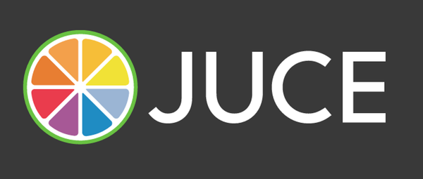
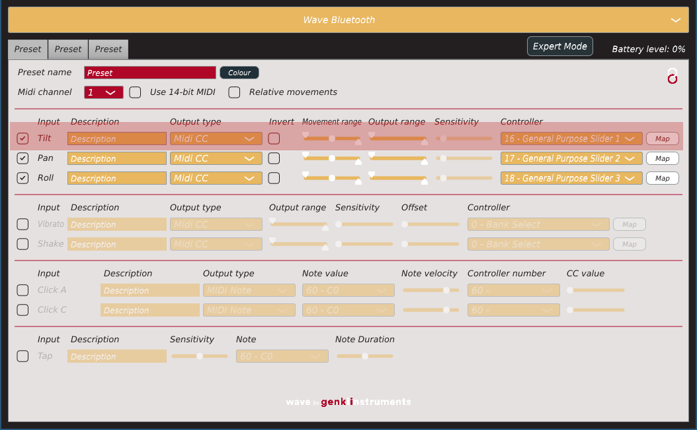
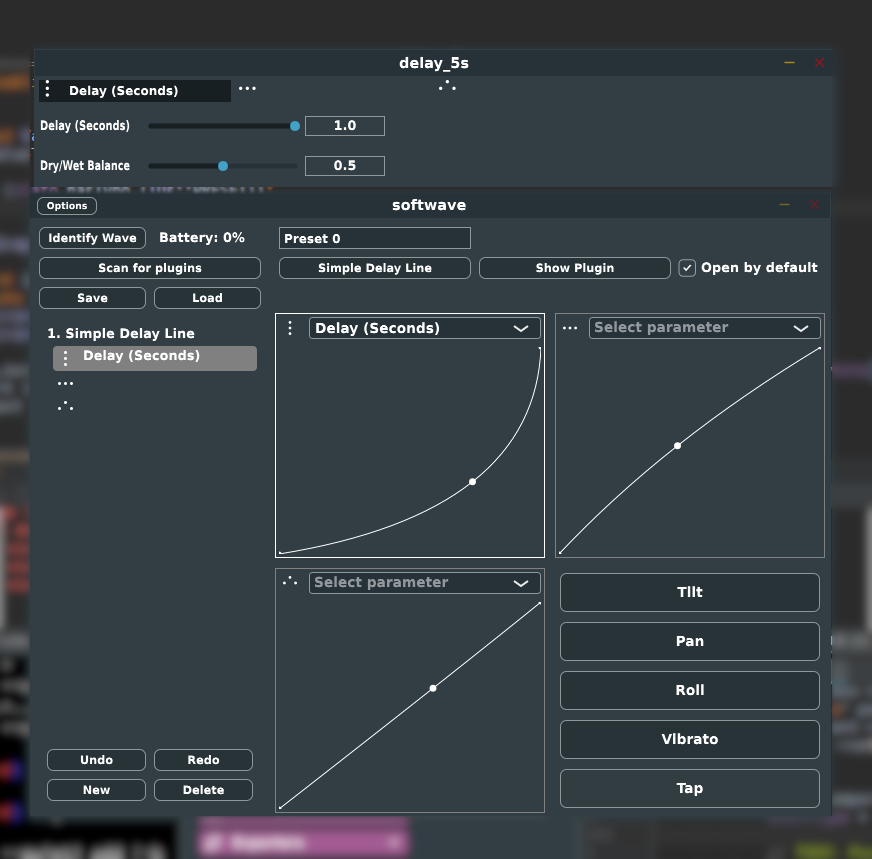

JUCE is a partially open-source cross-platform C++ application framework, used for the development of desktop and mobile applications.
Juce has an object oriented model of components. Each component knows how to paint and resize itself.
In a classic OOP fashion some components (parents) can own other components (children), and are in charge of laying them out, resizing etc.
class Foo : public juce::Component { Foo() { addAndMakeVisible(tilt); addAndMakeVisible(pan); addAndMakeVisible(roll); addAndMakeVisible(vibrato); addAndMakeVisible(tap); }
void resized() override { auto r = getLocalBounds(); const auto h = r.proportionOfHeight(1 / static_cast<float>(NumTypeButtons)); const auto reduce = 5; tilt.setBounds(r.removeFromTop(h).reduced(reduce)); pan.setBounds(r.removeFromTop(h).reduced(reduce)); roll.setBounds(r.removeFromTop(h).reduced(reduce)); vibrato.setBounds(r.removeFromTop(h).reduced(reduce)); tap.setBounds(r.removeFromTop(h).reduced(reduce)); }

class MovementRowView : public RowView, public ComboBox::Listener, public Slider::Listener { public: MovementRowView(PresetBankMessageListener& l, const Wave::Preset& p, Wave::Movement& m, Wave::Axis& a); // For parent -> child communication void unselectPitchbend(); void updateMidiBitWidth(bool is14bit); void relativeMovements(bool absolute); void handleMidi(const juce::MidiMessage& msg); void inputRangeUpdated(); void enableMapping(bool enable); void actionUpdated() override; private: // GUI state (model) const Wave::Preset& preset; Wave::Movement& movement; Wave::Axis& axis; // For child -> parent communication PresetBankMessageListener& listener; };
Take in reference to a listener. Have to remember to call correct function in the right context etc.
Callback for each state-change.
void MovementRowView::buttonClicked(Button* button) { if (button == &activeToggle) { const auto enabled = button->getToggleState(); enable(enabled); enableComponent(&relativeCenterPointSlider, !movement.absolute && enabled); axis.enabled = enabled; listener.pushChange(axis); } else if (button == &invertToggle) { axis.invert = button->getToggleState(); listener.pushChange(axis); } else if (button == &mapButton) { if (auto* parent = dynamic_cast<MovementView*>(getParentComponent())) { const auto enable = !axis.mapping; parent->disableAllMapping(); enableMapping(enable); } } }
juce::ComponentHighly coupled, hard to maintain, doesn't scale.

Intuition: Thinking about state in a GUI as a tree-like data structure (think type-safe XML).
juce::ValueTrees are a lightweight wrapper around reference-counted juce::Value. Their recursive nature allows for passing the whole tree or subtrees between components. Components subscribe as listeners to changes in trees or subtrees. Single point of mutating state that is then reflected in the GUI.
This may not sound all that interesting but the effect can be quite dramatic!
<?xml version="1.0" encoding="UTF-8"?> <PRESET_BANK name="My Preset Bank" id="0" uuid="e7ad1981153240728a5b324e89b8f4f4" focused="0" position="0"> <PRESET name="Preset 0" open_by_default="1" id="648c565fb3cd4ce6855e657a7b3b5130" focused="0"> <MAPPING id="55d08a53fc7f44c494982b1a802f8476" position="0" type="16" name="Tilt" points="0|0|1|1|0.5|0.5" focused="1" display_norm_t="0.5" parameter_id="0" parameter_name="Delay (Seconds)"/> <MAPPING id="68a4790a722a44da8fc721f38683f470" position="0" type="17" name="Pan" points="0|0|1|1|0.5|0.5" focused="0" display_norm_t="0.5"/> <MAPPING id="a7a7afa9ce07465a8dbfaf3bd8d745e9" position="0" type="18" name="Roll" points="0|0|1|1|0.5|0.5" focused="0" display_norm_t="0.5"/> <PLUGIN id="LADSPA-Simple Delay Line-a70dec2d-0" name="Simple Delay Line" version="1.1" node_id="5"/> </PRESET> </PRESET_BANK>
class MappingViewEmpty : public juce::Component { public: MappingViewEmpty(ValueTree vt, UndoManager& u) : state(vt), undoManager(u) {} private: void addMapping(int type) { ValueTree new_mapping(IDs::MAPPING); Helpers::createUuidProperty(new_mapping); new_mapping.setProperty(IDs::position, idx, nullptr); new_mapping.setProperty(IDs::type, type, nullptr); new_mapping.setProperty(IDs::name, DefaultViewTypes.at(type), nullptr); state.appendChild(new_mapping, &undoManager); }; ValueTree state; UndoManager& undoManager; };
class MappingList : public juce::Component, public juce::ValueTree::Listener { public: MappingList(ValueTree v, UndoManager& u) : state(std::move(v)), undoManager(u) { for (const auto& child : state) if (child.hasType(IDs::MAPPING)) createView(child); mappingView.add(new MappingViewEmpty(state, undoManager)); state.addListener(this); } void valueTreeChildAdded(juce::ValueTree&, juce::ValueTree& tree) override { if (tree.isAChildOf(state) && tree.hasType(IDs::MAPPING)) { createView(tree); resized(); } } void valueTreeChildRemoved(juce::ValueTree& exParent, juce::ValueTree& tree, int) override { if (exParent == state && tree.hasType(IDs::MAPPING)) { removeView(tree); resized(); } } private: ValueTree state; UndoManager& undoManager; OwnedArray<Component> mappingView; };
juce::UndoManager object keeps a list of past actions and can use these actions to move backwards and forwards through an undo history.
We pass in a pointer to a juce::UndoManager object every time we want a change to be undoable nullptr otherwise.
new_plugin.setProperty(IDs::name, desc.name, &undoManager); preset.appendChild(new_plugin, &undoManager);
You can dump the entire state of the tree into xml or binary format that can easily be saved/loaded from disk. Code borrowed from drowaudio.
juce::ValueTree loadValueTree (const juce::File& file, bool asXml) { if (asXml) { if (auto xml = std::unique_ptr<juce::XmlElement> (juce::XmlDocument::parse (file))) return juce::ValueTree::fromXml (*xml); } else { juce::FileInputStream is (file); if (is.openedOk()) return juce::ValueTree::readFromStream (is); } return {}; } bool saveValueTree (const juce::ValueTree& v, const juce::File& file, bool asXml) { const juce::TemporaryFile temp (file); juce::FileOutputStream os (temp.getFile()); if (! os.getStatus().wasOk()) return false; if (asXml) { if (auto xml = std::unique_ptr<juce::XmlElement> (v.createXml())) xml->writeToStream (os, juce::StringRef()); } else { v.writeToStream (os); } if (temp.getFile().existsAsFile()) return temp.overwriteTargetFileWithTemporary(); return false; }
juce::ValueTreejuce::Componentjuce::ValueTree::Listenerunique_ptr as RAII
Instead of having a refresh function use C++ build-in RAII!
headerView = std::make_unique<HeaderView>(preset, undoManager); mappingList = std::make_unique<MappingList>(preset, undoManager, processor.getPluginParameters());
Instead of extending a listener class, overriding functions and subscribing, you simply create lambdas in the constructor. They are localized to one place in the code and thus avoid a lot of unnecessary boilerplate.
Foo::Foo() { tilt.onClick = [this] { addMapping(ViewType::Tilt); }; listPlugins.onClick = [this] { pluginListWindow = std::make_unique<PluginListWindow>(processor.formatManager); }; // ... }
Great for applying the same function to a number of components. Code borrowed from drowaudio..
template<typename FunctionType> inline void visitComponents (std::initializer_list<Component*> comps, FunctionType&& fn) { std::for_each (std::begin (comps), std::end (comps), fn); } Foo::Foo() { // ... drow::visitComponents({&tilt, &pan, &roll, &vibrato, &shake, &tap} [this](Component* c) { addAndMakeVisible(c); }); drow::visitComponents({&tilt, &pan, &roll, &vibrato, &shake, &tap}, [this](Component* c) { c->addMouseListener(this, false); }); // ... }